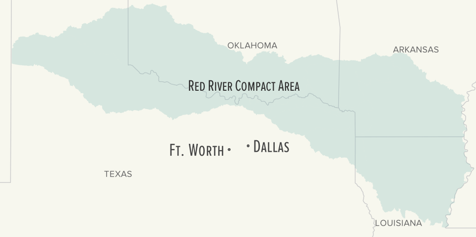
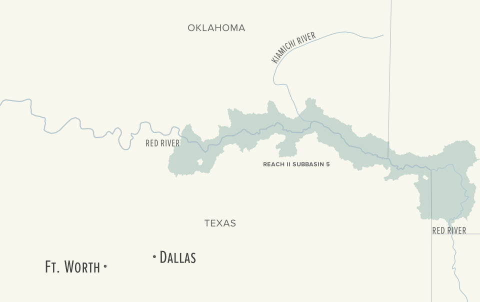

Water Fight
By Danny DeBelius, Yan Lu, Chris Swope and Joe Wertz
The U.S. Supreme Court is set to weigh in on a water rights dispute between Oklahoma and Texas. The two states disagree on how to interpret the Red River Compact, which regulates water withdrawals from the Red River and its tributaries. The case is called Tarrant Regional Water District v. Herrmann, and the outcome could impact interstate water compacts across the country. Here’s a look at what the fight is about.
Compact Area
Oklahoma, Texas, Arkansas and Louisiana signed the Red River Compact in 1978. The agreement regulates water rights in a large swathe of the four states.
The Plaintiff
The Tarrant Regional Water District serves an 11-county region in Texas that includes Ft. Worth. The district wants to tap the Kiamichi River — a Red River tributary in Oklahoma — and pump the water to Texas for its customers to use. Rudolf John Herrmann and other members of the Oklahoma Water Resources Board said no.
Texas Thirst
Since Congress approved the Red River Compact in 1980, growth in the Dallas-Ft. Worth metro area has boomed. The population is projected to double by 2060. By then, the Tarrant Regional Water District says its customers’ water demand will far outstrip its supply. Much of the demand comes from Tarrant County, which is home to Ft. Worth.
Contentious Clause
A key question before the Court is how to interpret compact language governing an area known as “Reach 2, Subbasin 5.” The compact says the four states “shall have equal rights to the use of runoff originating in the subbasin” but Oklahoma and Texas disagree on what that means.
Join the Discussion
You can share your thoughts and images with other readers in comment box below.